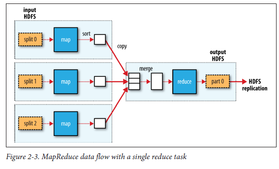

Table of Contents
1 Point at Hadoop
- Coordinating the processes in a large-scale distributed computation is a challenge.
The ardest aspect is gracefully handling partial failure—when you don’t know whether or not a remote process has failed—and still making progress with the overall computation. the optimal split size is the same as the block size: it is the largest size of input that can be guaranteed to be stored on a single node. If the split spanned two blocks, it would be unlikely that any HDFS node stored both blocks, so some of the split would have to be transferred across the network to the node running the map task, which is clearly less efficient than running the whole map task using local data.Map tasks write their output to the local disk, not to HDFS.Why is this? Map output is intermediate output: it’s processed by reduce tasks to produce the final output, and once the job is complete, the map output can be thrown away. So, storing it in HDFS with replication would be overkill. If the node running the map task fails before the map output has been consumed by the reduce task, then Hadoop will automatically rerun the map task on another node to re-create the map output.Reduce tasks don’t have the advantage of data locality;!the input to a single reduce task is normally the output from all mappers. In the present example, we have a single reduce task that is fed by all of the map tasks.Therefore, the sorted map outputs have to be transferred across the network to the node where the reduce task is running, where they are merged and then passed to the user-defined reduce function.The output of the reduce is normally stored in HDFS for reliability.For each HDFS block of the reduce output, the first replica is stored on the local node, with other replicas being stored on off-rack nodes for reliability. Thus, writing the reduce output does consume network bandwidth, but only as much as a normal HDFS write pipeline consumes.The number of reduce tasks is not governed by the size of the input, but instead is specified independently.When there are multiple reducers, the map tasks partition their output, each creating one partition for each reduce task. There can be many keys (and their associated values) in each partition, but the records for any given key are all in a single partition.The partitioning can be controlled by a user-defined partitioning function, but normally the default partitioner—which buckets keys using a hash function—works very well.MapReduce data flow with a single reduce task.The dotted boxes indicate nodes, the dotted arrows show data transfers on a node, and the solid arrows show data transfers between nodes.
2 HDFS
2.1 Shortcoming
- Low-latency data access
- Lots of small files
- Multiple writers , arbitrary file modifications
2.2 Blocks
2.2.1 virtue
- The first benefit is the most obvious: a file can be larger than any single disk in the network.
- Second, making the unit of abstraction a block rather than a file simplifies the storage subsystem.
- Furthermore, blocks fit well with replication for providing fault tolerance and availability.
2.3 Namenodes and Datanodes
- `The namenode manages the filesystem namespace.` It maintains the filesystem tree and the metadata for all the files and directories in the tree. This information is stored persistently on the local disk in the form of two files: the namespace image and the edit log. The namenode also knows the datanodes on which all the blocks for a given file are located; however, it does not store block locations persistently, because this information is reconstructed from datanodes when the system starts.
- Without the namenode, the filesystem cannot be used. In fact, if the machine running the namenode were obliterated, all the files on the filesystem would be lost since there would be no way of knowing how to reconstruct the files from the blocks on the datanodes. For this reason, it is important to make the namenode resilient to failure, and Hadoop provides two mechanisms for this.
- The first way is to back up the files that make up the persistent state of the filesystem metadata. Hadoop can be configured so that the namenode writes its persistent state to multiple filesystems. These writes are synchronous and atomic. The usual configuration choice is to write to local disk as well as a remote NFS mount.
- It is also possible to run a secondary namenode, which despite its name does not act as a namenode. Its main role is to periodically merge the namespace image with the edit log to prevent the edit log from becoming too large. The secondary namenode usually runs on a separate physical machine because it requires plenty of CPU and as much memory as the namenode to perform the merge. It keeps a copy of the merged namespace image, which can be used in the event of the namenode failing. However, the state of the secondary namenode lags that of the primary, so in the event of total failure of the primary, data loss is almost certain. The usual course of action in this case is to copy the namenode’s metadata files that are on NFS to the secondary and run it as the new primary. Note that it is possible to run a hot standby namenode instead of a secondary.
2.4 Blocking Caching
Normally a datanode reads blocks from disk, but for frequently accessed files the blocks may be explicitly cached in the datanode’s memory, in an off-heap block cache.By default, a block is cached in only one datanode’s memory, although the number is configurable on a per-file basis. Job schedulers (for MapReduce, Spark, and other frameworks) can take advantage of cached blocks by running tasks on the datanode where a block is cached, for increased read performance. A small lookup table used in a join is a good candidate for caching.
2.5 HDFS Federation
3 Yarn
4 Cloudera Manager
werwerwrwerwr oop